Konsep Dasar SAST & DAST
SAST (Static Application Security Testing) adalah metode pengujian keamanan yang dilakukan
tanpa menjalankan aplikasi. Pengujian fokus pada kode sumber, bytecode, atau binary untuk mencari kerentanan
seperti SQL Injection, buffer overflow, hardcoded secrets, dan kesalahan logika.
Karakteristik:
- Dilakukan sebelum aplikasi berjalan
- Bersifat white-box testing
- Mendeteksi bug lebih awal (shift-left security)
- Tools umum: SonarQube, Bandit, Checkmarx
DAST (Dynamic Application Security Testing) adalah metode pengujian yang
dilakukan pada aplikasi yang sedang berjalan untuk melihat bagaimana sistem merespons
input dan serangan dari luar.
Karakteristik:
- Dilakukan saat aplikasi aktif
- Bersifat black-box testing
- Mendeteksi celah runtime seperti XSS, SQL Injection, CSRF
- Tools umum: OWASP ZAP, Burp Suite, Nikto
Mengapa SAST & DAST Penting
Penerapan kedua metode ini mendukung prinsip DevSecOps:
- Shift-left security — menemukan bug lebih awal.
- Continuous security — pengujian otomatis setiap commit.
- Security gate — build pipeline bisa dihentikan saat ada vulnerability kritis.
- Meningkatkan kualitas kode dan keamanan secara keseluruhan.
Pipeline DevSecOps dengan SAST & DAST
Pipeline umum:
- Developer melakukan commit kode
- Unit test berjalan
- SAST dengan SonarQube
- Build dan deploy ke staging
- DAST menggunakan OWASP ZAP
- Deployment ke production setelah lulus security gate
Pendekatan ini memastikan aplikasi diuji secara menyeluruh — baik dari sisi kode maupun sisi perilaku aplikasi.
Menjalankan SAST Menggunakan SonarQube
Berikut langkah-langkah menjalankan analisis statis menggunakan SonarQube.
1. Menjalankan SonarQube via Docker
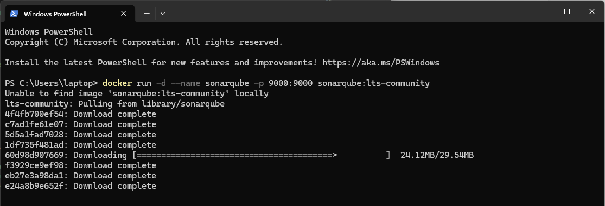
Akses melalui browser: http://localhost:9000
Login default: admin / admin
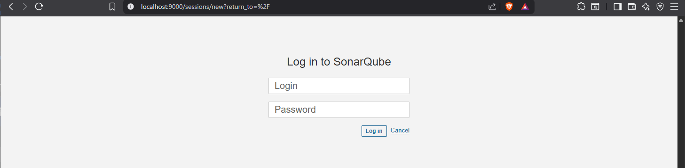
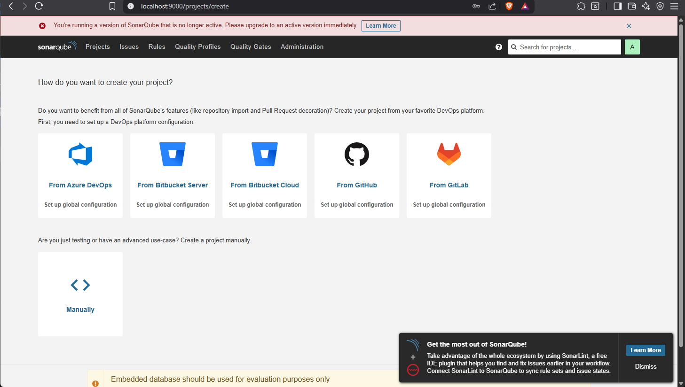
Ambil token : My Account > Security > Generate Token
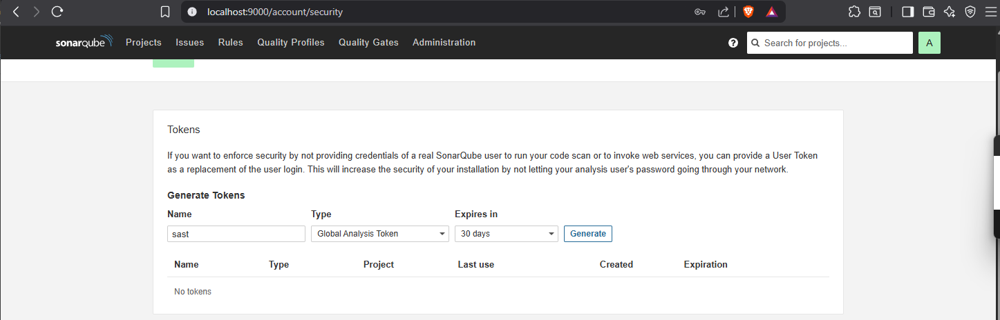
2. Install Sonar Scanner (Windows)
1. Download Sonar Scanner
- Buka website resmi: https://docs.sonarsource.com/sonarqube/latest/analyzing-source-code/scanners/sonarscanner/
- Cari bagian SonarScanner for Windows
- Download file ZIP: sonar-scanner-cli-7.3.0.5189-windows-x64.zip
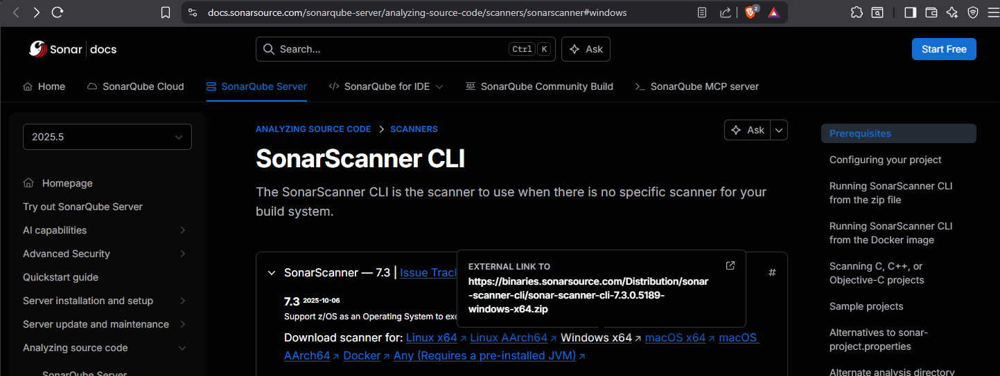
2. Extract ZIP
- Setelah di-download, klik kanan → Extract All
- Pindahkan folder hasil extract ke lokasi permanen, misalnya:
- Di dalamnya akan ada folder seperti:
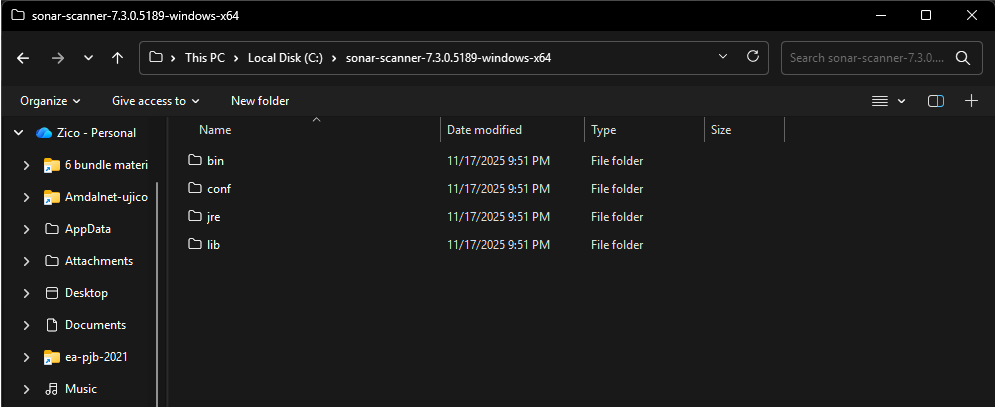
3. Tambahkan ke PATH Windows
Agar bisa menjalankan sonar-scanner di Command Prompt / PowerShell.
Langkah-langkah:
- Tekan Start → ketik Edit the system environment variables
- Klik Environment Variables
- Pada “System variables”, cari Path → klik Edit
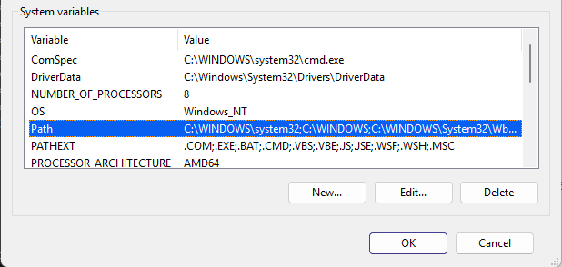
- Klik New
- Masukkan path:
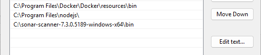
- Klik OK sampai selesai
4. Cek instalasi
Buka Command Prompt atau PowerShell, kemudian jalankan:
Jika berhasil, akan muncul informasi versi.
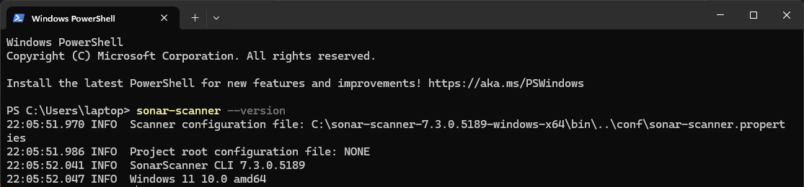
5. Konfigurasi file sonar-project.properties
Di dalam folder project kamu, buat file:
Isinya contoh:
6. Jalankan scan
Dari CMD/PowerShell di folder project:
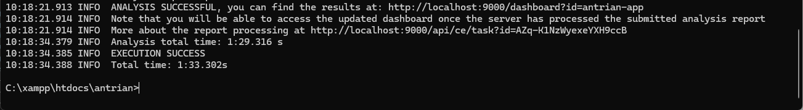
Sonar Scanner akan mengirimkan analisis ke SonarQube di localhost:9000.

Menjalankan DAST Menggunakan OWASP ZAP
OWASP ZAP digunakan untuk menguji kerentanan runtime.
- Buka Command Prompt (CMD) lalu masuk ke direktori proyek:
- Jalankan OWASP ZAP Baseline Scan menggunakan perintah berikut:
- Hasil Scan:
Setelah proses selesai, buka laporan hasil pemindaian pada:
C:\xampp\htdocs\antrian\zap_report.html
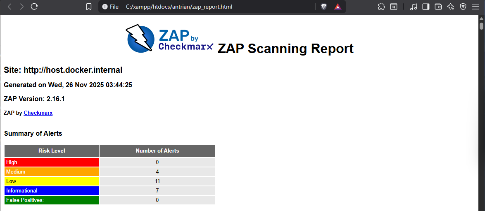
| High |
Medium |
Low |
Informational |
|
• Content Security Policy (CSP) Header Not Set
• Missing Anti-clickjacking Header
• Source Code Disclosure - SQL
• Sub Resource Integrity Attribute Missing
|
• Big Redirect Detected (Potential Sensitive Information Leak)
• Cookie No HttpOnly Flag
• Cookie without SameSite Attribute
• Cross-Domain JavaScript Source File Inclusion
• In Page Banner Information Leak
• Insufficient Site Isolation Against Spectre Vulnerability
• Permissions Policy Header Not Set
• Server Leaks Information via "X-Powered-By" Header
• Server Leaks Version Information via "Server" Header
• Timestamp Disclosure - Unix
• X-Content-Type-Options Header Missing
|
• Authentication Request Identified
• Information Disclosure - Suspicious Comments
• Modern Web Application
• Non-Storable Content
• Session Management Response Identified
• Storable and Cacheable Content
• User Controllable HTML Element Attribute (Potential XSS)
|
Integrasi CI/CD
Kedua tools dapat diintegrasikan ke dalam GitHub Actions atau Jenkins
untuk mengotomatisasi proses SAST dan DAST. Pipeline ini membuat setiap commit diuji
keamanannya secara otomatis.
Contoh Github Action:
Contoh Jenkinsfile:
Interpretasi Hasil
SonarQube:
- Bugs: logic errors → perbaiki flow program
- Vulnerabilities: misalnya improper input validation → lakukan sanitasi input
- Security Hotspots: perlu review manual, misalnya penggunaan crypto library
OWASP ZAP:
Temuan umum:
- XSS → gunakan escaping & Content Security Policy
- SQL Injection → gunakan prepared statement
- Missing Security Headers → tambahkan HSTS, X-Frame-Options
- Directory listing → matikan autoindex pada server
Untuk setiap kerentanan, pastikan dilakukan:
- Validasi input
- Sanitasi output
- Penerapan prinsip least privilege
- Hardening aplikasi & server
Kesimpulan
SAST dan DAST adalah dua pendekatan penting untuk menjaga keamanan aplikasi dalam DevSecOps.
SAST membantu mendeteksi kerentanan pada tahap awal, sedangkan DAST memastikan aplikasi aman
saat dijalankan. Integrasi keduanya ke pipeline otomatis membuat proses pengembangan lebih aman,
cepat, dan efisien.